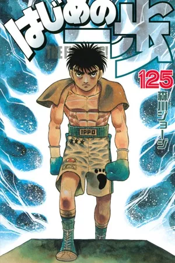

Hajime no ippo
Makunouchi Ippo, un chico reservado y tímido de 17 años, trabaja día a día junto a su madre en la modesta "Tienda de Pesca Makunouchi". Su vida, consumida por el negocio familiar, no le deja tiempo para disfrutar de la amistad ni del deporte. Un día, mientras se dirige a casa por un puente, unos abusones de su colegio, liderados por Masahiko Umezawa, lo agreden por su inusual olor a lombrices. En el preciso momento de mayor peligro, aparece Mamoru Takamura, un boxeador de renombre que lo salva y lo lleva a su gimnasio. Allí, mientras Ippo se recupera, Takamura le brinda una probada del mundo del boxeo, animándolo a golpear un costal de arena. Impresionado por el potencial de Ippo, Takamura le presta vídeos de los mejores nocauts de Mike Tyson. Con cada golpe y cada imagen, Ippo despierta un sueño: convertirse en un boxeador profesional, resurgir con la fuerza de un campeón y descubrir el verdadero significado de ser fuerte.